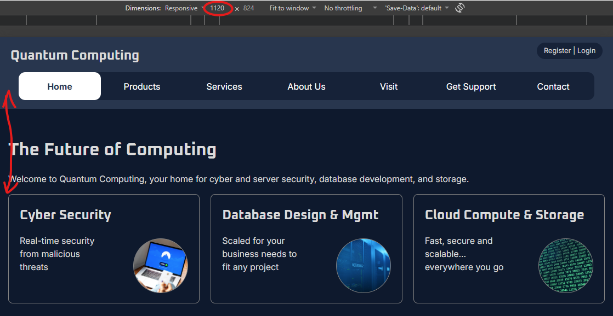

Student: Steven Plomedahl Site: Quantum Computing; cyber security and database management firm.
| Destination | Final label | Order/group rationale |
|---|---|---|
| products.html | Products | Page where potential customers/clients can evaluate security and database offerings. |
| services.html | Services | Page where potential customers/clients can evaluate security and database offerings. |
| support.html | Get Support | Page where clients can get troubleshooting and technical support, review the FAQs, and send a message. |
Method and widths tested: I tested at 320px, 768px, and 1280px and everything fit visually and was functional. Then I used the responsive slider in DevTools and determined the breakpoint to be 1120px or 70rem; this is the point where the service cards and expanded navigation bar become too crowded and "squished".
First content failure: Services cards and expanded navigation bar become crowded and squished.

Chosen breakpoint in relative units: 70rem
Long-label and zoom retest: No issues with long labels at
320px or 200% zoom.
| Condition | Expected | Observed | Result and repair |
|---|---|---|---|
| Keyboard: button, Tab, Escape, focus | All links/buttons in focus and functional when tabbed to with the keyboard. | All links/buttons in focus and functional when tabbed to with the keyboard. | Pass |
| Pointer/touch targets | [Expected] | [Observed] | [Pass/fail and repair] |
| 320px and breakpoint region | [Expected] | [Observed] | [Pass/fail and repair] |
| 200% zoom | [Expected] | [Observed] | [Pass/fail and repair] |
| JavaScript unavailable | [Expected] | [Observed] | [Pass/fail and repair] |
| CSS unavailable / wide recovery | [Expected] | [Observed] | [Pass/fail and repair] |
Screenshot filenames and what each proves: [Response]
Tester relationship (no name needed): [Response]
Two tasks attempted: [Response]
What the tester did or said: [Direct observation]
Change made or justified: [Response]
Explain initialization, state synchronization, activation, and Escape/focus behavior in your own words. Refer to the exact variable, attribute, dataset value, function, and event used.
[Response]
Tool and purpose, or none: [Response]
Prompt/task: [Response]
Accepted, changed, or rejected output: [Response]
How I verified it: [Tests and sources]